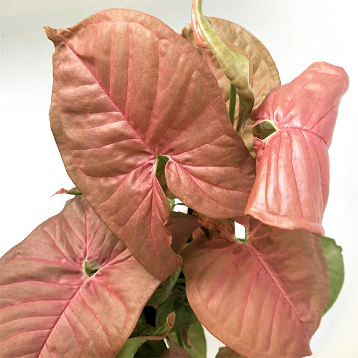

Syngonia (zejména ty se světlými listy) umístěte na světlé místobez přímého slunce. Na dostatečný přísun světla dbejte obzvlášť v zimě.
Naopak druhy s tmavšími listy snesou i polostín..Ideální je pokojová teplota okolo 20 °C.
Upozornění: rostlina je při pozřetí zdraví škodlivá
Mezi jednotlivými zálivkami nechejte substrát mírně proschnout. Zalévejte ideálně vlažnou vodou a na zimu zálivku snižte.
Syngonia vyžadují vyšší vzdušnou vlhkost. Květináč můžete umístit na misku s keramzitem a vodou, nebo jinak vhodně zvyšovat vlhkost vzduchu.
V období vegetace hnojte standardním hnojivem pro pokojové rostliny.
Synogonium lze množit vrcholovými řízky. Ty nechejte zakořenit ve vodě, nebo v substrátu.
Pro rychlejší kořenění použijte vhodný přípravek jako je třeba lignohumát
Bohatý, dobře propustný substrát s většími kusy (piniová kůra nebo kokosové kousky), aby kořeny měly dostatek kyslíku.
Univerzální mix pro Aroidy
40% Substrát
20% Piniová kůra
20% Perlit
20% Rašelina
Vlhký sphagnum moss se skvěle hodí pro zakořenění nových řízků nebo nemocných syngonium. Ponechejte v mechu pouze do doby, než se vyvinou sekundární kořeny
a ty se přesunou do jiného substrátu.
Přesazovat jednou za rok na jaře, do květináče 1x většího.

Syngonium I would want: Syngonium aurea, mojito